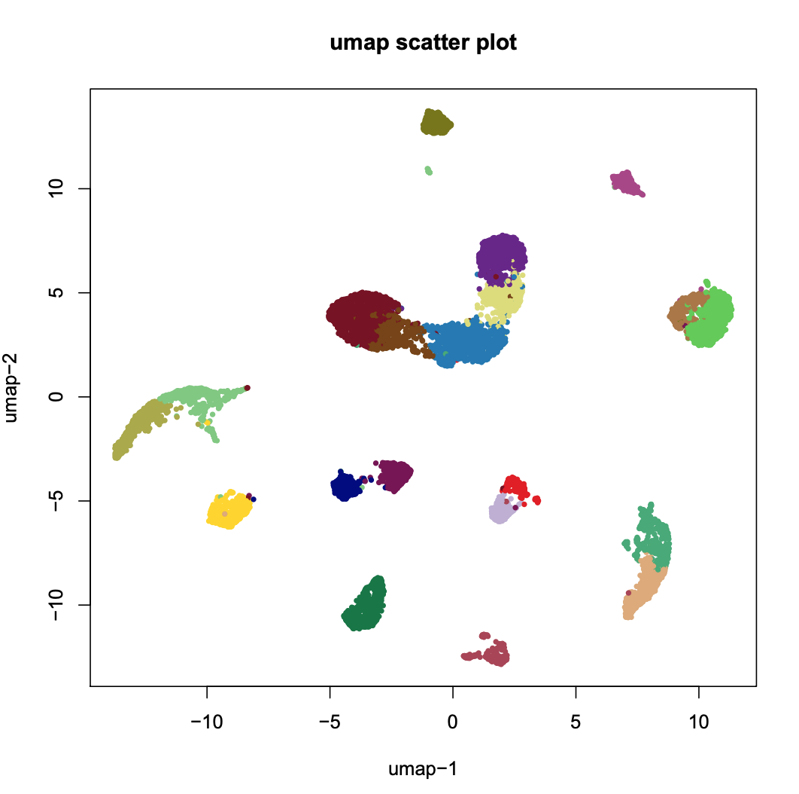
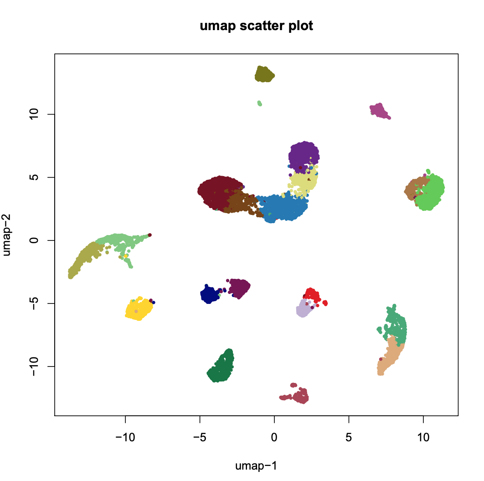
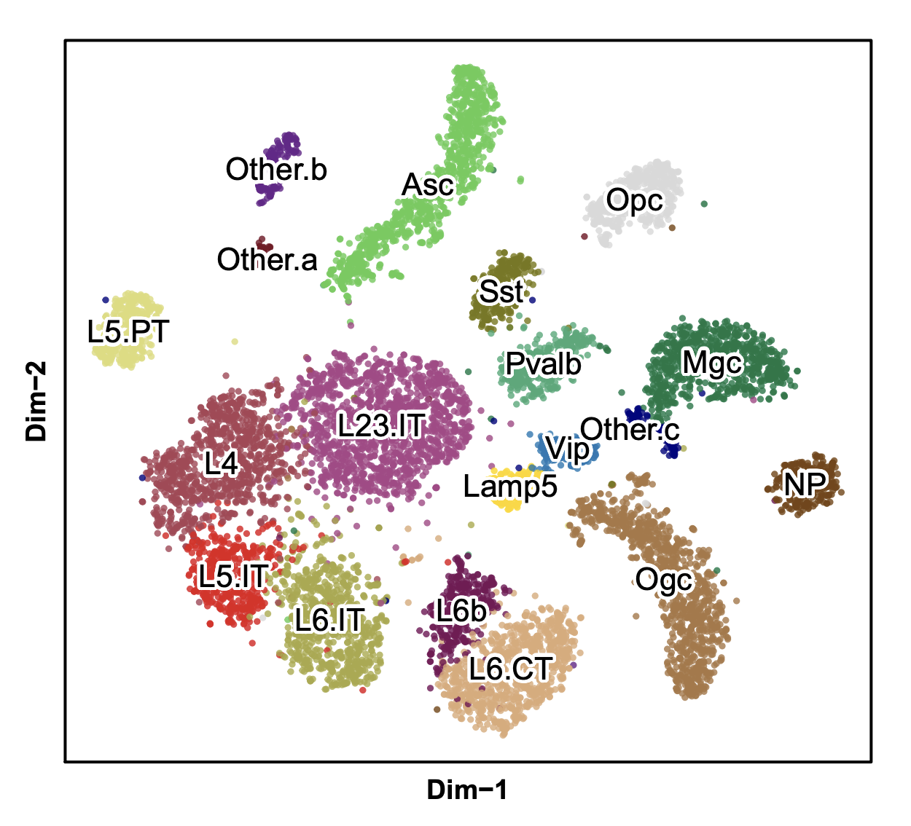
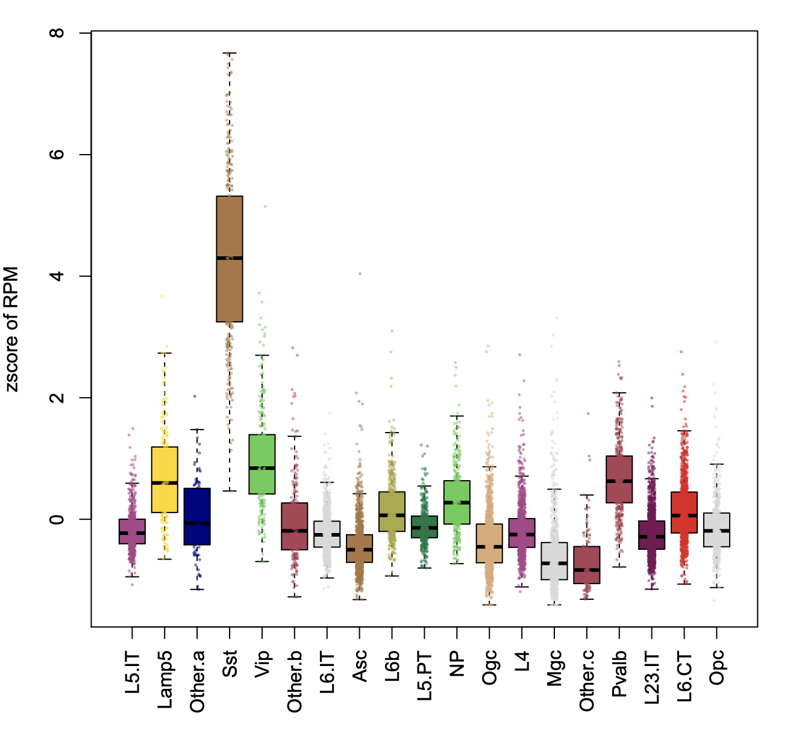
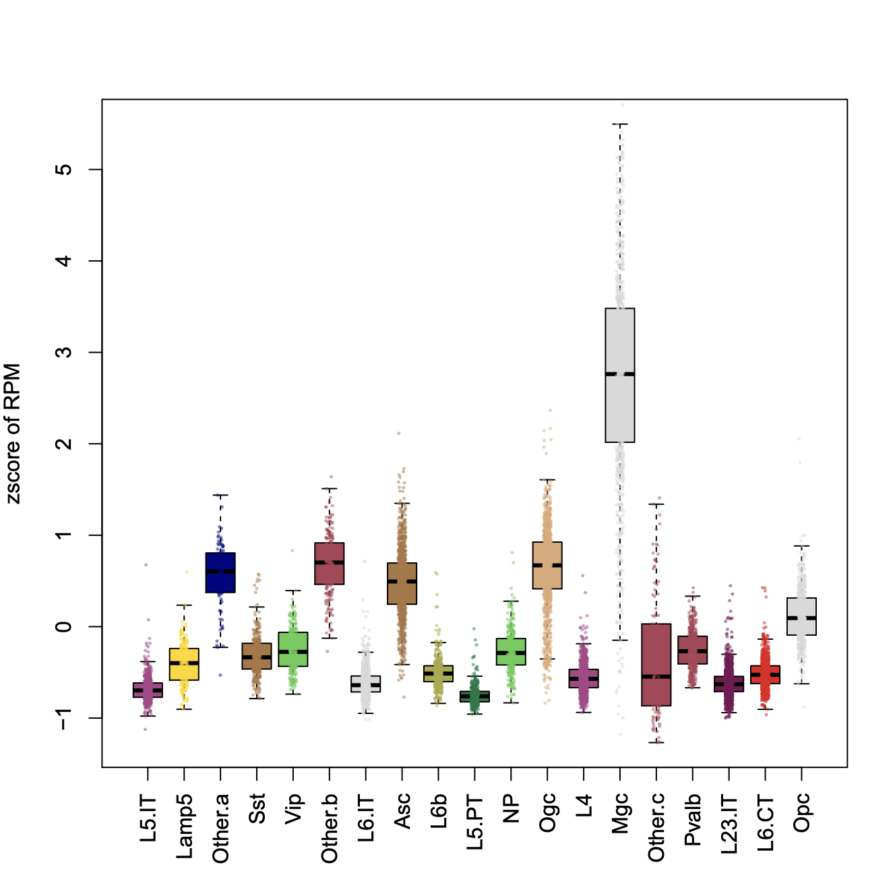
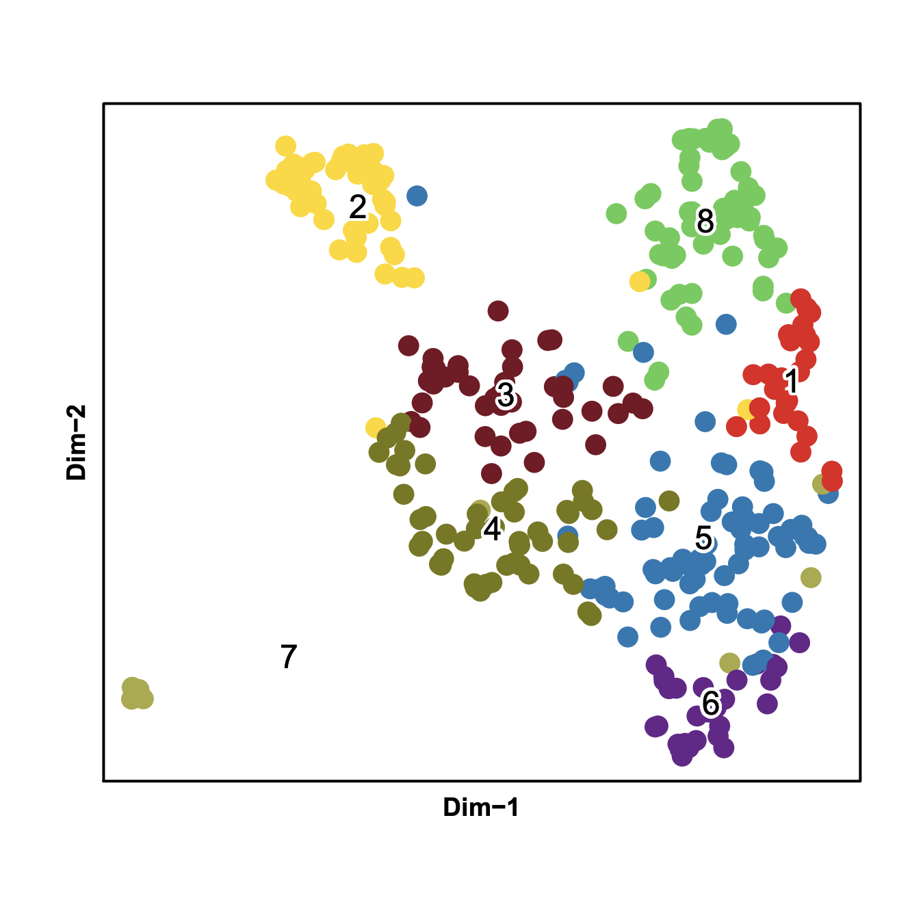
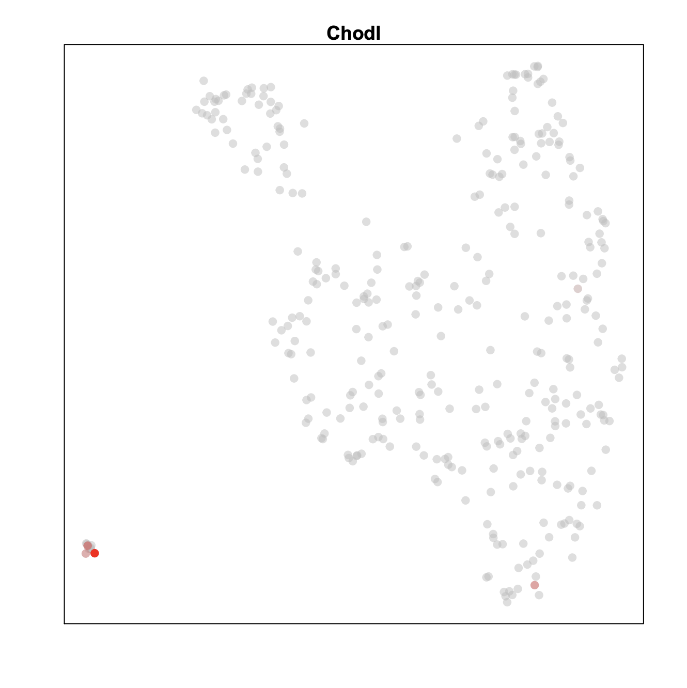

Please note that the data displayed here is only a subset of MOs reported in Fang 2019 paper.
In Fang 2019, mouse secondary motor cortex is dissected into three slices namely anterior, middle and posterior, each having two biological replicates. In this tutorial, we will analyze one dataset CEMBA180306_2B which is the first replicate for middle (2nd) slice.
Step 0. Download the snap file.
snap (Single Nucleus Accessibility Profile) file is a hierarchically structured hdf5 file that is specially designed for storing single nucleus ATAC-seq datasets. A snap file (version 4) contains the following sessions: header (HD), cell-by-bin accessibility matrix (AM), cell-by-peak matrix (PM), cell-by-gene matrix (GM), barcode (BD) and fragment (FM).
Detailed information about snap file can be found here. See how to generate CEMBA180306_2B.snap here.
$ R
> system("wget http://renlab.sdsc.edu/r3fang/share/Fang_2019/MOs_snATAC/snap/CEMBA180306_2B.snap")Step 1. Barcode selection (SnapATAC)
Using snap file, we next identify the high-quality barcode based on the following metrices: 1) fragment.num - Total Sequencing Fragments; 2) umap.ratio - uniquely mapped ratio; 3) dup.ratio - duplate ratio; 4) pair.ratio - properly paired ratio; 5) mito.ratio - mitochondrial ratio.
Note that we no longer use reads in peak ratio as a metric for cell selection mainly for two reasons: First, we found the reads-in-peak ration is highly cell type specific. For instance, according to published single cell ATAC-seq, human fibroblast (BJ) cells have significantly higher reads in peak ratio (40-60%) versus 20-40% for GM12878 cells. Similarly, we found Glia cells overall have very different reads in peak ratio distribution compared to neuronal cells. We suspect this may reflect the nucleus size or global chromatin accessibility. Second, accessibility peaks identified from aggregate signal are usually incomplete and are biased to the dominant populations. When studying complex tissue such as mammalian brain, we found it is up to 50% of the peaks present in the rare populations are not identified from the bulk analysis. Therefore, we abandon the use of reads in peak ratio for cell selection. NOTE: plotBarcode only works with snap file generated by snaptools.
> library(SnapATAC);
> x.sp = createSnap(
file="CEMBA180306_2B.snap",
metaData=TRUE,
des="2nd slice of MOs"
);
> plotBarcode(x.sp,
pdf.file.name=NULL,
pdf.width=7,
pdf.height=7,
col="grey",
border="grey",
breaks=50
);
# filter cells based on the following cutoffs
> x.sp = filterCells(x.sp,
subset.names=c("fragment.num", "UMI"),
low.thresholds=c(1000,500),
high.thresholds=c(Inf, Inf)
);
> x.sp
2nd slice of MOs
===================
number of barcodes: 11342
number of bins: 0
number of peaks: 0
number of genes: 0
> summarySnap(x.sp)
Total number of barcodes: 11342
Median number of sequencing fragments: 5334
Median number of uniquely mapped fragments: 3769.5
Median number of mappability ratio: 0.94
Median number of properly paired ratio: 1
Median number of duplicate ratio: 0.27
Median number of chrM ratio: 0.01
Median number of unique molecules (UMI): 3769.5Step 2. Bin size selection (SnapATAC)
Using remaining cells, we next deteremine the optimal bin size based on the correlation between replicates using (calBmatCor). If there are no biological replicates, the cells are evenly split into pseudo-replicates. We recommend chosing the smallest bin size that yields correlation greater than 0.95. In this example, the CEMBA180306_2B.snap file only contains 5kb cell-by-bin matrix and its correlation is 0.97.
# show what bin sizes exist in CEMBA180306_2B.snap file
> showBinSizes("CEMBA180306_2B.snap");
> x.sp = addBmatToSnap(x.sp, "CEMBA180306_2B.snap", bin.size=5000);
> calBmatCor(x.sp);
[1] 0.9714672Step 3. Matrix binarization (SnapATAC)
We next convert the cell-by-bin count matrix to a binary matrix. We found some items in the matrix have abnormally high coverage perhaps due to the alignment error. Therefore, we first remove top 0.1% items in the count matrix and then convert the rest of the values into binary.
> x.sp = makeBinary(x.sp, mat="bmat");Step 4. Bin filtration (SnapATAC)
We next filter out any bins overlapping with the ENCODE blacklist and bins belonging to chrM or random chromsomes to prevent from any potential artifacts.
> library(GenomicRanges);
> system("wget http://mitra.stanford.edu/kundaje/akundaje/release/blacklists/mm10-mouse/mm10.blacklist.bed.gz")
> black_list = read.table("mm10.blacklist.bed.gz");
> black_list.gr = GRanges(
black_list[,1],
IRanges(black_list[,2], black_list[,3])
);
> idy1 = queryHits(findOverlaps(x.sp@feature, black_list.gr));
> idy2 = grep("chrM|random", x.sp@feature);
> idy = unique(c(idy1, idy2));
> x.sp = x.sp[,-idy, mat="bmat"];
> x.sp
2nd slice of MOs
===================
number of barcodes: 11342
number of bins: 545011
number of peaks: 0
number of genes: 0
Bins of exceedingly high coverage are removed which likely represent the genomic regions that are invariable between cells such as housekeeping gene promoters. We also notice that filtering bins of very low coverage perhaps due to random noise can also improve the robustness of the downstream clustering analysis. In detail, we first calculate the coverage of each bin using the binary matrix and then normalize the coverage by log10(count + 1). The log-scaled coverage obey approximately a gaussian distribution which is then converted into zscore. In the following example, bins with zscore beyond ±2 were filtered.
> plotBinCoverage(
x.sp,
pdf.file.name=NULL,
col="grey",
border="grey",
breaks=10,
xlim=c(-6,6)
);
> x.sp = filterBins(
x.sp,
low.threshold=-2,
high.threshold=2,
mat="bmat"
);
> x.sp
2nd slice of MOs
===================
number of barcodes: 11342
number of bins: 476903
number of peaks: 0
number of genes: 0
Step 5. Jaccard matrix (SnapATAC)
We next convert the filtered genome-wide cell-by-bin matrix into a cell-by-cell similarity matrix by estimating the jaccard index between two cells in the basis of profile overlaps. Instead of calculating a full N-by-N jaccard matrix, we calculate a partial jaccard index matrix by randomly choosing max.var cells. By doing so, we demonstrate that it does not sacrifice the performance but significantly improves the scalability of the method.
> x.sp = runJaccard(
obj = x.sp,
mat = "bmat",
max.var=2000,
ncell.chunk=10000,
seed.use=10
);Step 6. Normalization (SnapATAC)
Due to the high dropout rate, we found that the jaccard index is highly affected by the differing read depth between cells. To eliminate such confounding factor, we have developed two methods for normalizing jaccard index normOVE and normOVN.
> x.sp = runNormJaccard(
obj = x.sp,
ncell.chunk=1000,
method="normOVE",
row.center=TRUE,
row.scale=TRUE,
low.threshold=-5,
high.threshold=5,
num.cores=5,
seed.use=10
);Step 7. Linear Dimentionality Reduction (SnapATAC)
Like other single-cell analysis, snATAC-seq contains extensive technical noise due to the high drop-out rate. To overcome this challenge, PCA or SVD is often applied to combine information across a correlated feature set hereby creating a mega-feature and exclude the variance potential resulting from technical noise. Here, we performed PCA against the normalized matrix. We used IRLBA algorithm, a fast and memory-efficient algorithm, to compute a partial PCA. IRLBA is implemented in irlba R package.
> x.sp = runDimReduct(
x.sp,
pc.num=50,
input.mat="jmat",
method="svd",
center=TRUE,
scale=FALSE,
seed.use=10
);Step 8. Determine statistically significant principal components (SnapATAC)
We next Determine how many PCs to include for downstream analysis. We use an ad hoc method for determining which PCs to use is to look at a plot of the standard deviations of the principle components and draw your cutoff where there is a clear elbow in the graph. The other ad hoc way to determine PCs is to plot out every two PCs and select until PCs that have no obvious structure.
> plotDimReductElbow(
obj=x.sp,
point.size=1.5,
point.shape=19,
point.color="red",
point.alpha=1,
pdf.file.name=NULL,
pdf.height=7,
pdf.width=7,
labs.title="PCA Elbow plot",
labs.subtitle=NULL,
);
> plotDimReductPW(
obj=x.sp,
pca.dims=1:50,
point.size=0.3,
point.color="grey",
point.shape=19,
point.alpha=0.6,
down.sample=5000,
pdf.file.name=NULL,
pdf.height=7,
pdf.width=7,
);

Step 9. KNN Graph Construction (SnapATAC)
Using selected significant components, we next construct a K Nearest Neighbor (KNN) Graph. Using euclidean distance, the k-nearest neighbors of each cell are identified accoriding and used to create a KNN graph. KNN graph can be further refined to SNN (Shared Nearest Neighbor) graph by adding edge weight between cells as shared overlap in their local neighborhoods using Jaccard similarity. This function is inspired and modified from Seurat package. (ignore save.knn and filename for a dataset with less than 100,000 cells).
> x.sp = runKNN(
obj=x.sp,
pca.dims=1:30,
weight.by.sd=FALSE,
k=15,
nn.eps=0.0,
snn=TRUE,
prune.snn=1/15,
save.knn=FALSE,
filename=NULL
);Step 10. Clustering (SnapATAC)
Using KNN graph, we next apply community finding algorithm Louvain to identify the clusters in the resulting graph which represent groups of cells sharing similar ATAC-seq profiles, potentially originating from the same cell type.
> x.sp = runCluster(
obj=x.sp,
louvain.lib="R-igraph",
path.to.snaptools=NULL,
load.knn.from.file=FALSE,
edge.file=NULL,
seed.use=10
);Alterantively, we can run louvain cluster using snaptools with different resolution. Note this runs a bit longer. Here we use result from R-igraph for downstream analysis.
> system("which snaptools");
> x2.sp = runCluster(
obj=x.sp,
louvain.lib="python-louvain",
resolution=0.5,
path.to.snaptools="/home/r3fang/anaconda2/bin/snaptools",
load.knn.from.file=FALSE,
edge.file=NULL,
seed.use=10
);
> rm(x2.sp);Step 11. Non-linear dimentionality reduction (SnapATAC)
SnapATAC allows using tSNE, UMAP and FIt-sne to visualize and explore these datasets. In the following example, data is visulized by tsne implemented by R package (Rtsne). To run umap, you need to first install umap package. To run fast_tsne, you need to first install fast_tsne package.
> x.sp = runViz(
obj=x.sp,
dims=2,
pca.dims=1:30,
weight.by.sd=FALSE,
method="Rtsne",
fast_tsne_path=NULL,
Y.init=NULL,
seed.use=10,
num.cores=5
);
> x.sp = runViz(
obj=x.sp,
dims=2,
pca.dims=1:30,
weight.by.sd=FALSE,
method="umap",
fast_tsne_path=NULL,
Y.init=NULL,
seed.use=10,
num.cores=5
);
> system("which fast_tsne");
/projects/ps-renlab/r3fang/public_html/github/FIt-SNE/bin/fast_tsne
> x.sp = runViz(
obj=x.sp,
dims=2,
pca.dims=1:30,
weight.by.sd=FALSE,
method="fast_tsne",
fast_tsne_path="/projects/ps-renlab/r3fang/public_html/github/FIt-SNE/bin/fast_tsne",
Y.init=NULL,
seed.use=10,
num.cores=5
);Step 12. Visulization (SnapATAC)
SnapATAC allows using tSNE, UMAP and FIt-sne to visualize and explore these datasets. In the following example, data is visulized by tsne implemented by R package (Rtsne).
> plotViz(
obj=x.sp,
method="tsne",
point.size=0.5,
point.shape=19,
point.alpha=0.8,
text.add=TRUE,
text.size=1.5,
text.color="black",
text.halo.add=TRUE,
text.halo.color="white",
text.halo.width=0.2,
down.sample=10000,
pdf.file.name=NULL,
pdf.width=7,
pdf.height=7
);
> plotViz(
obj=x.sp,
method="umap",
point.size=0.5,
point.shape=19,
point.alpha=0.8,
text.add=TRUE,
text.size=1.5,
text.color="black",
text.halo.add=TRUE,
text.halo.color="white",
text.halo.width=0.2,
down.sample=10000,
pdf.file.name=NULL,
pdf.width=7,
pdf.height=7
); 

Step 13. Gene-body based annotation for expected cell types (SnapATAC)
To help annotate identified cell clusters, SnapATAC next loads the cell-by-gene matrix which estimates the gene body accessibility level.
> x.sp = addGmatToSnap(x.sp, "CEMBA180306_2B.snap");
> x.sp = scaleCountMatrix(
x.sp,
cov=x.sp@metaData$UQ,
mat="gmat",
method = "RPM"
);
> marker.genes = c(
"Snap25", "Gad2", "Apoe",
"C1qb", "Pvalb", "Vip",
"Sst", "Lamp5", "Slc17a7",
"Mog", "Pdgfra", "Cspg4",
"Cx3cr1","F3","Aqp4",
"Rorb"
);
> plotGene(
obj=x.sp,
gene.names=marker.genes,
viz.method="tsne",
point.size=0.3,
point.color="red",
point.shape=19,
background.point=TRUE,
background.point.color="grey",
background.point.alpha=0.3,
background.point.size=0.1,
background.point.shape=19,
low.value=0.0,
high.value=0.95,
down.sample=5000,
seed.use=10,
plot.nrow=4,
plot.ncol=4,
pdf.file.name=NULL,
pdf.height=7,
pdf.width=7
);
Step 14. Heretical clustering of the clusters (SnapATAC)
# calculate the ensemble signals for each cluster
> ensemble.ls = lapply(split(seq(length(x.sp@cluster)), x.sp@cluster), function(x){
Matrix::colMeans(x.sp@bmat[x,])
})
# cluster using 1-cor as distance
> hc = hclust(as.dist(1 - cor(t(do.call(rbind, ensemble.ls)))), method="ward.D2");
> plot(hc, hang=-1, xlab="");
Step 15. Gene-body based annotation for excitatory neurons
We next extracted the clusters belonging to excitatory neurons based on the gene accessibility level for Slc17a7 and plot layer-specific marker genes enrichment.
> idx = which(x.sp@cluster %in% c(11, 1, 7, 13, 19, 10, 9, 20));
> length(idx) # 6035 53% of total population
> marker.genes = c(
"Cux2", "Rorb", "Deptor",
"Vat1l", "Sulf1", "Tle4",
"Foxp2", "Tshz2", "Grik3"
);
> plotGene(
obj=x.sp[idx,],
gene.names=marker.genes,
viz.method="tsne",
point.size=0.2,
point.color="red",
point.shape=19,
background.point=TRUE,
background.point.color="grey",
background.point.alpha=0.3,
background.point.size=0.1,
background.point.shape=19,
low.value=0.0,
high.value=1.0,
down.sample=5000,
seed.use=10,
plot.nrow=3,
plot.ncol=3,
pdf.file.name=NULL,
pdf.height=7,
pdf.width=7
);
Step 16. Change the cluster label to cell type
> library(plyr);
> current.cluster.ids <- 1:21;
> new.cluster.ids <- c("L5.IT", "Lamp5", "Other.a",
"Sst", "Vip", "Other.b",
"L6.IT", "Asc", "L6b",
"L5.PT", "NP", "Ogc",
"L4", "Mgc", "Other.c",
"Asc", "Pvalb", "Ogc",
"L23.IT", "L6.CT", "Opc"
);
> x.sp@cluster <- plyr::mapvalues(x = x.sp@cluster, from = current.cluster.ids, to = new.cluster.ids);
> plotViz(
obj=x.sp,
method="tsne",
point.size=0.5,
point.shape=19,
point.alpha=0.8,
text.add=TRUE,
text.size=1.3,
text.color="black",
text.halo.add=TRUE,
text.halo.color="white",
text.halo.width=0.2,
down.sample=10000,
pdf.file.name=NULL,
pdf.width=7,
pdf.height=7
); 
Step 17. Identify cis-elements for each cluster seperately
> system("which snaptools")
/home/r3fang/anaconda2/bin/snaptools
> system("which macs2")
/home/r3fang/anaconda2/bin/macs2
> peaks_sst.df = runMACS(
obj=x.sp[which(x.sp@cluster=="Sst"),],
file="CEMBA180306_2B.snap",
output.prefix="CEMBA180306_2B.Sst",
path.to.snaptools="/home/r3fang/anaconda2/bin/snaptools",
path.to.macs="/home/r3fang/anaconda2/bin/macs2",
gsize="mm",
buffer.size=500,
macs.options="--nomodel --shift 37 --ext 73 --qval 1e-2 -B --SPMR --call-summits",
tmp.folder=NULL
);Call peaks for clusters with cells more than 300 cells.
> peak.gr = runMACSForAll(
obj=x.sp,
file="CEMBA180306_2B.snap",
output.prefix="CEMBA180306_2B",
path.to.snaptools="/home/r3fang/anaconda2/bin/snaptools",
path.to.macs="/home/r3fang/anaconda2/bin/macs2",
num.cores=10,
min.cells=300,
gsize="mm",
buffer.size=500,
macs.options="--nomodel --shift 37 --ext 73 --qval 1e-2 -B --SPMR --call-summits",
tmp.folder=NULL
);
> peaks.gr
GRanges object with 190276 ranges and 0 metadata columns:
seqnames ranges strand
<Rle> <IRanges> <Rle>
[1] chr1 [3095032, 3095530] *
[2] chr1 [3113755, 3113828] *
[3] chr1 [3119616, 3120678] *
[4] chr1 [3121467, 3121578] *
[5] chr1 [3167265, 3167370] *
... ... ... ...
[190272] chrY [90803444, 90803664] *
[190273] chrY [90807594, 90807850] *
[190274] chrY [90808789, 90808945] *
[190275] chrY [90809504, 90809630] *
[190276] chrY [90829048, 90829121] *
-------
seqinfo: 22 sequences from an unspecified genome; no seqlengthsStep 18. Create a cell-by-peak matrix
Using merged peaks as a reference, we next create a cell-by-peak matrix using the original snap file.
> runSnapAddPmat(
file="CEMBA180306_2B.snap",
peak=peaks.gr,
path.to.snaptools="/home/r3fang/anaconda2/bin/snaptools",
buffer.size=500
);Because the snap file you have downloaded already has cell-by-peak matrix, we can just upload the cell-by-peak matrix into the existing snap object without running the previous step.
> x.sp = addPmatToSnap(obj=x.sp, file="CEMBA180306_2B.snap");Step 19. Identify Differentially Accessible Regions (DARs)
SnapATAC can help find differentially accessible regions (DARs) that define clusters via differential analysis. By default, it identifes positive peaks of a single cluster (specified in cluster.pos), compared to a group of negative control cells.
> idy_sst = findDAR(
obj=x.sp,
mat="pmat",
cluster.pos="Sst",
cluster.neg=NULL,
bcv=0.1,
fdr=5e-2,
pvalue=1e-2,
test.method="exactTest",
seed.use=10
);
> idy_mgc = findDAR(
obj=x.sp,
mat="pmat",
cluster.pos="Mgc",
cluster.neg=NULL,
bcv=0.1,
fdr=1e-2,
pvalue=1e-2,
test.method="exactTest",
seed.use=10
);
> y_sst = Matrix::rowSums(x.sp@pmat[, idy_sst]) / x.sp@metaData$UQ * 1000000;
> y_mgc = Matrix::rowSums(x.sp@pmat[, idy_mgc]) / x.sp@metaData$UQ * 1000000;
> y_sst = (y_sst - mean(y_sst)) / sd(y_sst);
> y_mgc = (y_mgc - mean(y_mgc)) / sd(y_mgc);
> boxPlotFeature(
obj = x.sp,
feature = y_sst,
outline = FALSE,
ylab = "zscore of RPM",
main = "Sst DARs Enrichment",
add.point = TRUE,
point.size = 0.2,
point.shape = 19,
point.alpha = 0.5,
pdf.file.name=NULL,
pdf.height=7,
pdf.width=7
);
> boxPlotFeature(
obj = x.sp,
feature = y_mgc,
outline = FALSE,
ylab = "zscore of RPM",
main = "Sst DARs Enrichment",
add.point = TRUE,
point.size = 0.2,
point.shape = 19,
point.alpha = 0.5,
pdf.file.name=NULL,
pdf.height=7,
pdf.width=7
); 
Step 20. Motif analysis identifies master regulators
SnapATAC can help reveal master regulators that are enriched in the differentially accessible regions (DARs).
> system("which findMotifsGenome.pl");
/projects/ps-renlab/r3fang/public_html/softwares/homer/bin/findMotifsGenome.pl
> motifs = runHomer(
x.sp[,idy_sst,"pmat"],
mat = "pmat",
path.to.homer = "/projects/ps-renlab/r3fang/public_html/softwares/homer/bin/findMotifsGenome.pl",
result.dir = "./homer/Sst",
num.cores=5,
genome = 'mm10',
motif.length = 10,
scan.size = 300,
optimize.count = 2,
background = 'automatic',
local.background = FALSE,
only.known = FALSE,
only.denovo = FALSE,
fdr.num = 5,
cache = 100,
overwrite = TRUE,
keep.minimal = FALSE
);
> head(motifs)
Motif.Name Log.P.value
1 Tcf21(bHLH)/ArterySmoothMuscle-Tcf21-ChIP-Seq(GSE61369)/Homer -940.4
2 Tcf12(bHLH)/GM12878-Tcf12-ChIP-Seq(GSE32465)/Homer -801.1
3 Ascl1(bHLH)/NeuralTubes-Ascl1-ChIP-Seq(GSE55840)/Homer -785.8
4 Ap4(bHLH)/AML-Tfap4-ChIP-Seq(GSE45738)/Homer -753.7
5 Ptf1a(bHLH)/Panc1-Ptf1a-ChIP-Seq(GSE47459)/Homer -718.6
6 E2A(bHLH)/proBcell-E2A-ChIP-Seq(GSE21978)/Homer -697.5
Find motifs enriched in Mgc DARs.
> motifs = runHomer(
x.sp[,idy_mgc,"pmat"],
mat = "pmat",
path.to.homer = "/projects/ps-renlab/r3fang/public_html/softwares/homer/bin/findMotifsGenome.pl",
result.dir = "./homer/Mgc",
num.cores=5,
genome = 'mm10',
motif.length = 10,
scan.size = 300,
optimize.count = 2,
background = 'automatic',
local.background = FALSE,
only.known = FALSE,
only.denovo = FALSE,
fdr.num = 5,
cache = 100,
overwrite = TRUE,
keep.minimal = FALSE
);
> head(motifs)
Motif.Name Log.P.value
1 PU.1(ETS)/ThioMac-PU.1-ChIP-Seq(GSE21512)/Homer -3880
2 Elf4(ETS)/BMDM-Elf4-ChIP-Seq(GSE88699)/Homer -3589
3 SpiB(ETS)/OCILY3-SPIB-ChIP-Seq(GSE56857)/Homer -3218
4 ELF5(ETS)/T47D-ELF5-ChIP-Seq(GSE30407)/Homer -3208
5 ETS1(ETS)/Jurkat-ETS1-ChIP-Seq(GSE17954)/Homer -2824
6 Etv2(ETS)/ES-ER71-ChIP-Seq(GSE59402)/Homer(0.967) -2628 Step 21. Subclustering of Sst reveals rare population
GABAergic neurons are composed of highly diverse neurons. Previous single cell RNA-seq analysis has revealed extensive amount of GABAergic subtypes. Here we perform sub-cluster of Sst to further identify its subtype. In this example, SnapATAC identifies very rare population Sst Chodl (15 cells) which counts for less than 0.1% of total population.
> x.sst.sp = x.sp[which(x.sp@cluster == "Sst"),];
> x.sst.sp
2nd slice of MOs
===================
number of barcodes: 341
number of bins: 476589
number of peaks: 316257
number of genes: 53278
> x.sst.sp = runJaccard(
obj = x.sst.sp,
mat = "bmat",
max.var=2000,
ncell.chunk=10000,
num.cores=1,
seed.use=10
);
> x.sst.sp = runNormJaccard(
obj = x.sst.sp,
ncell.chunk=1000,
method="normOVE",
row.center=TRUE,
row.scale=TRUE,
low.threshold=-5,
high.threshold=5,
num.cores=5,
seed.use=10
);
> x.sst.sp = runDimReduct(
x.sst.sp,
pc.num=50,
input.mat="jmat",
method="svd",
center=TRUE,
scale=FALSE,
seed.use=10
);
> plotDimReductPW(
obj=x.sst.sp,
pca.dims=1:40,
point.size=1,
point.color="grey",
point.shape=19,
point.alpha=0.6,
down.sample=1000,
pdf.file.name=NULL,
pdf.height=7,
pdf.width=7,
);
> x.sst.sp = runKNN(
obj= x.sst.sp,
pca.dims=1:10,
weight.by.sd=FALSE,
k=15,
nn.eps=0.0,
snn=TRUE,
prune.snn=1/15,
save.knn=FALSE,
filename=NULL
);
> x.sst.sp = runCluster(
obj=x.sst.sp,
louvain.lib="R-igraph",
path.to.snaptools=NULL,
load.knn.from.file=FALSE,
edge.file=NULL,
seed.use=10
);
> x.sst.sp = runViz(
obj=x.sst.sp,
dims=2,
pca.dims=1:10,
weight.by.sd=FALSE,
method="umap",
fast_tsne_path=NULL,
Y.init=NULL,
seed.use=10,
num.cores=5
);
> plotViz(
obj=x.sst.sp,
method="umap",
point.size=2,
point.shape=19,
point.alpha=1,
text.add=TRUE,
text.size=1.5,
text.color="black",
text.halo.add=TRUE,
text.halo.color="white",
text.halo.width=0.2,
down.sample=10000,
pdf.file.name=NULL,
pdf.width=7,
pdf.height=7
);
> plotGene(
obj=x.sst.sp,
gene.names=c("Chodl"),
viz.method="umap",
point.size=1,
point.color="red",
point.shape=19,
background.point=TRUE,
background.point.color="grey",
background.point.alpha=0.5,
background.point.size=1,
background.point.shape=19,
low.value=0.0,
high.value=1.0,
down.sample=5000,
seed.use=10,
plot.nrow=1,
plot.ncol=1,
pdf.file.name=NULL,
pdf.height=7,
pdf.width=7
); 
Elapsed time for key steps
These tests were performed on a machine running CentOS release 6.6 (Final) with an Intel(R) Xeon(R) CPU E5-2670 0 @ 2.60GHz and 63GB of RAM.
| Function | Time (sec) |
|---|---|
| createSnap | 0.149 sec |
| filterCells | 0.059 sec |
| addBmatToSnap | 41.571 sec |
| makeBinary | 3.621 sec |
| filterBins | 1.162 sec |
| runJaccard | 30.822 sec |
| runNormJaccard | 23.905 sec |
| runDimReduct | 18.639 sec |
| runKNN (snn) | 26.262 sec |
| runCluster (R-igraph) | 2.266 sec |
| runViz (Rtsne) | 41.009 sec |
| addGmatToSnap | 16.121 sec |
| addPmatToSnap | 22.689 sec |
| findDAR (Sst) | 18.811 sec |
| Total | 247.086 sec (<5min) |